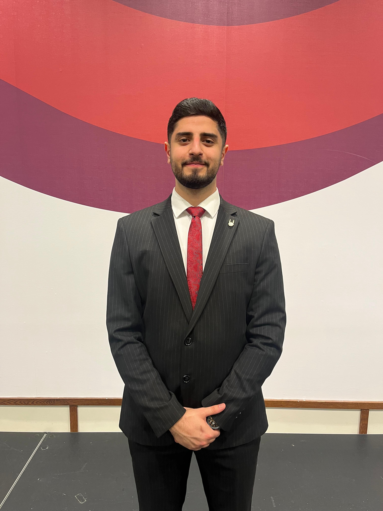
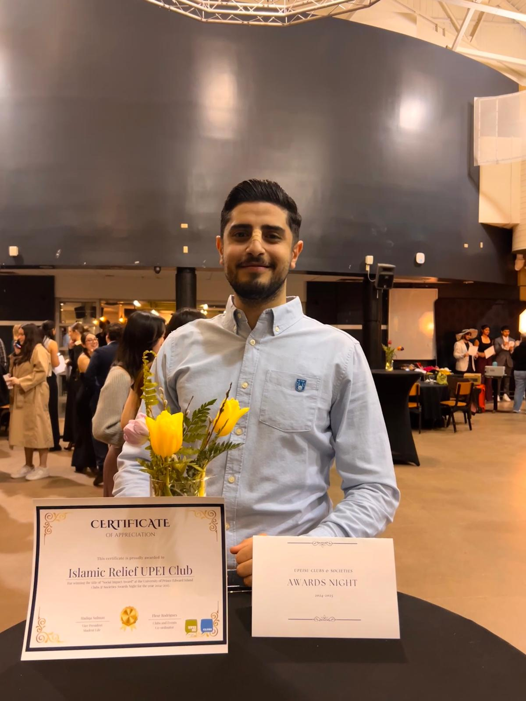

Computer Science Graduate / Software Development / IT & Systems Support / Team Leadership
Practical software. Reliable support. Visible leadership.
Abdel Rahman Alashel
Computer Science graduate from UPEI bringing together software development, systems support, client-facing communication, and community leadership.
I build practical tools, troubleshoot real problems, support users, and stay comfortable taking ownership. My work spans Python applications, API integration, SQL databases, Java simulations, responsive web development, and the coordination needed to keep projects and people moving forward.

01
Community Leadership
A technical profile with real community traction behind it.

Featured Story
Leadership that shows up in projects, fundraisers, and people.
Alongside technical work, I have led regional teams, founded student organizations, organized campaigns, recruited and supported volunteers, and helped deliver community programs that were meant to be useful, welcoming, and well-run.
That work includes fundraising, event logistics, community outreach, student support, and hands-on campaign delivery across university and Island-wide initiatives.
$200K+ raised across 3 years
37+ fundraisers
110+ volunteers recruited
4,500+ attendees served
02
Selected Work
Projects built around practical tools, clear structure, and real use cases.
Internship Project
Desktop ApplicationLCCN Harvester Project
A desktop application built during my Software Development Internship with the UPEI Library. The tool helps librarians retrieve LCCN and NLMCN call numbers by processing ISBN lists and searching multiple sources, including Z39.50 and public library APIs such as the Library of Congress, Harvard LibraryCloud, and OpenLibrary.
Highlights
- Built a cross-platform Python GUI using PyQt6.
- Integrated multiple data sources and APIs.
- Supported ISBN lookup, file import/export, storage, and validation.
- Improved retrieval quality through testing and optimization.
- Served as Team Lead / Scrum Master and handled client communication.
Database Systems
Academic ProjectCharity Operations Management Database
A database systems project for CS-3710 at UPEI modeling donors, donations, campaigns, events, volunteers, partners, beneficiaries, and distributions using a domain I already know closely from real charity operations.
- Designed the ERD / ERM and relational schema.
- Created a synthetic dataset for academic and demo use.
- Built SQL queries for reporting and analysis.
- Modeled traceability from donation to distribution to beneficiary.
Java + Front End
Simulation ProjectRISK Game Simulation + Web Visualizer
A combined Java and web project that models the classic Risk strategy game, evaluates player strategies, and presents the simulation in a more visual and understandable way through a browser-based layer.
- Built major game components such as players, countries, cards, and board logic.
- Implemented multiple strategies to compare performance.
- Added a web visualizer to communicate results more clearly.
Responsive Web Project
Multi-page SiteFC Barcelona Fan Page
A responsive fan page website with Home, History, Players, and Tickets pages, built to strengthen front-end structure, styling, navigation, dark mode, and mobile responsiveness.
- Built multiple connected pages with clear navigation.
- Improved layout, imagery, and mobile responsiveness.
- Added interactivity and stronger presentation with JavaScript.
Published Website
Live ProjectUnc Games
A TypeScript website that brings classic browser-based games like Sudoku, Minesweeper, and more into one playful and polished destination.
- Built as a complete published project, not a draft concept.
- Focused on classic gameplay in a cleaner web experience.
- Designed to make casual play feel intentional and inviting.
03
Experience
Work shaped by technical execution, responsibility, and people-facing trust.
Worked on the LCCN Harvester desktop application for library cataloging support. Served as Team Lead / Scrum Master, contributed to frontend and backend development, integrated APIs and Z39.50 sources, supported testing, and communicated with the client.
- Python
- PyQt6
- APIs
- JSON
- SQLite
- Z39.50
- Git
- Testing
- Client communication
- Project coordination
Supported system operations, troubleshooting, technical documentation, and user support. This role strengthened my practical systems mindset and communication in a professional support environment.
- Systems support
- Troubleshooting
- Documentation
- User support
- Technical communication
Supported students academically through grading, tutoring, and proctoring. Helped evaluate coursework, explain technical concepts, and support learning in a university setting.
- Communication
- Academic support
- Attention to detail
- Technical explanation
- Responsibility
Managed kitchen operations, scheduling, inventory, invoices, food safety procedures, staff training, and closing responsibilities. The role reflects leadership, reliability, and calm execution under pressure.
- Leadership
- Operations management
- Scheduling
- Training
- Inventory
- Problem-solving
Customer-facing sales work involving communication, customer service, product explanation, and relationship building. It continues to sharpen confidence, professionalism, and problem-solving in fast conversations.
- Sales
- Communication
- Customer service
- Problem-solving
- Confidence
- Professionalism
04
About
Well-rounded, technical, and comfortable taking ownership.
I'm a Computer Science graduate from UPEI with experience across software development, IT support, systems support, and operations leadership. My technical work includes Python applications, GUI development, API integration, SQL databases, Java simulations, and responsive web projects.
I also have experience supporting users, troubleshooting systems, testing software, coordinating teams, and communicating with clients and stakeholders.
Outside of technical work, I have led university and Island-wide community initiatives, managed volunteer teams, coordinated events, and supported students through cultural, academic, and humanitarian projects. I bring a mix of technical ability, leadership, communication, and practical problem-solving.
Education
Bachelor of Science in Computer Science
University of Prince Edward Island
Graduated: 2026
Diplomas in Mathematics and Business
Certifications
- Emergency First Aid - Heart & Stroke / PEI, Canada, 2025
- Advanced Food Safety - Canadian Food Safety Group / PEI, Canada, 2025
- Emotional Intelligence - Scouts Association of Jordan, 2017
- Meeting Management - Al-Nashamah, 2018
- Public Speaking - Jakk Team, 2019
- Time Management - Ma'arej, 2021
Programming
- Python
- Java
- JavaScript
- TypeScript
- HTML
- CSS
- PHP
- SQL
- C
Frameworks / Tools
- PyQt6
- SQLite
- MySQL / MariaDB
- DBeaver
- Git
- GitHub
- VS Code
- PyCharm
- Excel
- JSON
- APIs
Software Development
- Object-oriented programming
- GUI development
- API integration
- Database design
- ERD / ERM
- Software testing
- Debugging
- Data modeling
- Responsive web design
IT / Systems Support
- Technical troubleshooting
- User support
- System setup
- Documentation
- Problem-solving
- Client communication
Leadership
- Team leadership
- Volunteer management
- Event planning
- Project coordination
- Public speaking
- Training
- Communication
- Community outreach
- Partnership coordination
Contact
Ready for software, support, and coordination opportunities.
I'm looking for roles where strong execution, technical learning, communication, and reliability matter. The portfolio now includes a dedicated community page, and project visuals can be expanded next as more project photos are added.